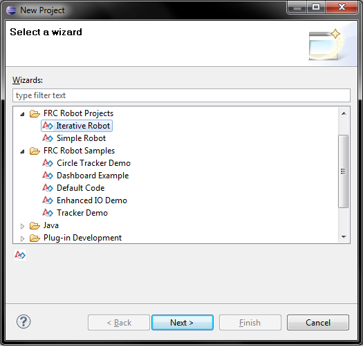

There are two types of projects included with the FRC Java Development Plug-ins. Robot projects, which are empty frameworks for Java code to run your robot, and Sample projects, which demonstrate how to use various features of WPILibJ. Both appear in the New Project dialog.
See Creating Robot Projects and Creating Sample Projects for more details on creating these projects.